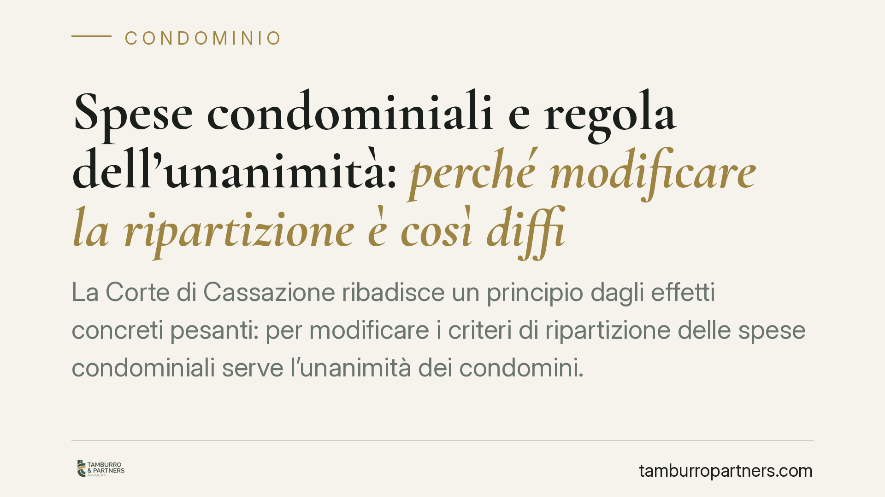

Spese condominiali e regola dell'unanimità: perché modificare la ripartizione è così difficile
La Corte di Cassazione ribadisce un principio dagli effetti concreti pesanti: per modificare i criteri di ripartizione delle spese condominiali serve l'unanimità dei condomini. Una tutela pensata contro gli abusi che, nella pratica, può bloccare la gestione dell'edificio. Vediamo cosa dice la norma e come muoversi quando anche un solo condomino si oppone.

Il principio affermato dalla Cassazione
La questione ruota attorno a una regola apparentemente semplice: i criteri con cui si dividono le spese tra i condomini non possono essere cambiati senza il consenso di tutti.
La Corte di Cassazione ha confermato questo orientamento, chiarendo che la modifica dei criteri legali o convenzionali di riparto incide direttamente sui diritti individuali di ciascun proprietario. Per questo non basta la maggioranza in assemblea: occorre l'accordo unanime.
È una lettura rigorosa, che privilegia la protezione del singolo rispetto all'efficienza gestionale del condominio.
Inquadramento normativo
Il riferimento è l'art. 1123 del Codice civile, che disciplina la ripartizione delle spese condominiali.
La norma individua tre criteri: le spese si dividono in base al valore delle quote di proprietà (i cosiddetti millesimi), salvo diversa convenzione; le spese per cose destinate a servire i condomini in misura diversa si ripartiscono in proporzione all'uso; le spese relative a parti che servono solo alcuni condomini gravano solo su questi ultimi.
Quando i condomini vogliono discostarsi da questi criteri — ad esempio adottando una diversa convenzione di riparto o modificandone una preesistente — la giurisprudenza richiede l'unanimità. La ragione è che una simile scelta modifica la posizione economica di ciascun proprietario, un aspetto che tocca la sfera dei diritti soggettivi e non la mera amministrazione del bene comune.
La delibera assunta a maggioranza su questa materia è, secondo la Cassazione, nulla: non semplicemente annullabile. La differenza non è teorica. La nullità può essere fatta valere da chiunque vi abbia interesse, senza il termine di trenta giorni previsto per l'impugnazione delle delibere annullabili (art. 1137 c.c.).
Implicazioni pratiche
Per chi vive e amministra un palazzo, l'effetto è tangibile.
Un singolo condomino contrario è sufficiente a bloccare qualsiasi revisione dei criteri di spesa, anche quando la maggioranza la ritiene equa o necessaria. Questo genera stalli difficili da superare, soprattutto negli edifici dove le tabelle millesimali risultano ormai obsolete o dove l'uso effettivo delle parti comuni è cambiato nel tempo.
L'amministratore si trova in una posizione delicata: portare in assemblea una modifica dei criteri di riparto e farla approvare a maggioranza espone a delibere nulle e a possibili contestazioni. Occorre distinguere con precisione tra ciò che l'assemblea può decidere a maggioranza (l'approvazione del rendiconto, la ripartizione applicando i criteri già esistenti) e ciò che richiede il consenso di tutti (la modifica dei criteri stessi).
È una distinzione che, se ignorata, produce contenziosi lunghi e costi che ricadono sull'intero condominio.
Cosa fare in concreto
- Verificate la natura della decisione prima dell'assemblea: distinguete tra applicazione dei criteri vigenti (maggioranza) e loro modifica (unanimità).
- Recuperate e controllate le tabelle millesimali e l'eventuale regolamento di natura contrattuale, per capire quali criteri sono realmente in vigore e come sono stati adottati.
- Formalizzate ogni consenso alla modifica dei criteri per iscritto, raccogliendo l'adesione di tutti i condomini, anche di quelli assenti.
- Documentate a verbale il tipo di delibera assunta e la relativa maggioranza, così da rendere trasparente il fondamento della decisione.
- Valutate soluzioni alternative quando l'unanimità è irraggiungibile: in presenza di errori nelle tabelle millesimali, la giurisprudenza ammette la revisione anche a maggioranza o per via giudiziale nei casi previsti.
La regola dell'unanimità nasce per proteggere il singolo proprietario da modifiche imposte a suo danno. Il rovescio della medaglia è l'immobilismo. Conoscere i confini tra le due maggioranze è il modo più efficace per gestire il condominio senza esporsi a nullità e contenziosi.
Disclaimer
Contributo informativo a cura di Tamburro & Partners - Avv. Giuseppe Tamburro. Non costituisce parere legale.
Ogni condominio ha una storia a sé.
Se gestisci un'amministrazione e vuoi un confronto su una specifica questione condominiale, scrivi allo studio. Ti rispondiamo entro un giorno lavorativo.